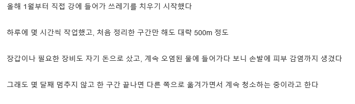
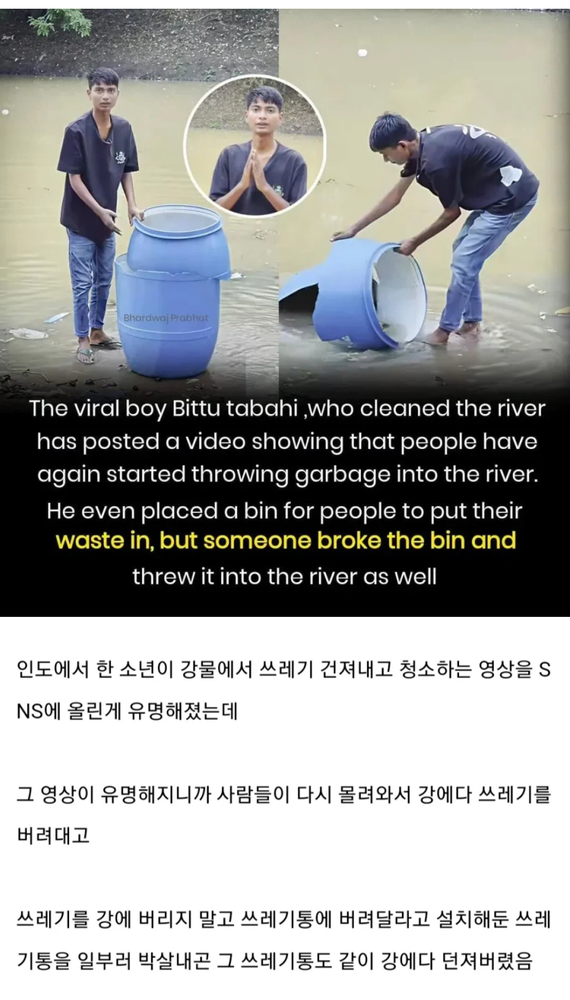

https://humoruniv.com/pds1423966
https://bbs.ruliweb.com/best/board/300143/read/76598808


https://humoruniv.com/pds1423966
https://bbs.ruliweb.com/best/board/300143/read/76598808


도대체 부처가 태어난 나라가 왜저러는거
원래 시궁창에서 피는 꽃이 더욱 이뻐보이는 법. 인간성 ㅈ박은 춘추전국시대때 사상가들이 많이 나타난것도 같은 이유
아니 뭐지 시발 우르르 몰려가서 같이 청소하는 뻔하지만 훈훈한 결말인줄 알았는데
ㄹㅇ 후원으로 보호장비라든가 청소에 유용한 도구 주는줄 알았는데 ..
공교육의 중요성

미친새끼들
뭐 미개한 중국 욕하다가 더 미개한 인도 욕하는데, 국민성 자체라기 보단 그냥 국가의 경제력이 시민의식도 결정한다 특이 일정수준 이하의 경제력이면 국민수준도 그에 비례해 낮아짐.
특히 성장기의 경제수준이 중요해서 우리나라도 80~90대는 인도수준의 시민의식
60~70대는 중국수준의 시민의식 정도라고 보면된다
반대로 인도보다 가난한 아프리카 3세계가면 인도가 선녀다 ㅋㅋ
아프리카 껌댕이들은 똥을 쭈그리고 싸는게 아니라 약간 엉거주춤한 자세로 엉덩이만 뒤로 내밀고 싸더라..
어떻게 알았냐고 묻지는마라...나도 기억삭제하고 싶으니까
인도민도수준
뭔가 저 청년이 유명해지는 그런결말일줄 알았는데 너무 웃기네 ㅋㅋㅋㅋㅋ 왜 난 웃기지 저새끼들 ㅋㅋㅋㅋ꼴받아서 일부러 찿아가서 쓰레기르 버렸대 ㅋㅋㅋㅋㅋㅋ
쓰레기장에 쓰레기 못버리게하는 개민폐놈이 나타났다고?

전기톱 아닌거보면 린도 경찰이 선녀였네
ㅋㅋ 쓰레기년들 차라리 짱꿔가 낫다
짱ㄲ는 그래도 동아시아인임
린도는 음... 가끔 보면 사회성이 있어서
집단생활을 하는 짐승 수준인거 같음
ㄹㅇ 집단강간이 일상인 나라.
짜장애들은 인간으로써 최하위권
린도는 짐승 그룹으로 보더라
와 정상적이면 도와서 쓰레기 건져내고 할탠대 뭔 .. 심보일까 ㅅㅂ .. 오히려 깽판쳐?!
저기서 정상이 쓰레기 버리는거고 쟤가 비정상인거같음.
쟤 쓰레기 치우려고
보호장비 없이 강에들어갔다가
피부가벗겨졌다는거보고
진짜 저긴 ...
지구의 암덩이는 사람이긴한데 인도인은 암중암인 췌장암 같음.
역시 린도
도덕이란걸 만들고 보편화시킨 존재들이 존경스럽다
한국의 공교육은 성공한거같아
(의사들이 파업을 하며)
그게 한계점인듯
공교육으로 얻는 도덕으로는 작은이익밖에 포기하게 못하는듯
큰 이익앞에서는 양심이고 도덕이고 무용지물
진짜 보법이 다르네 ㅋㅋㅋㅋㅋㅋㅋㅋ
그냥 저긴 짐승새끼들임..